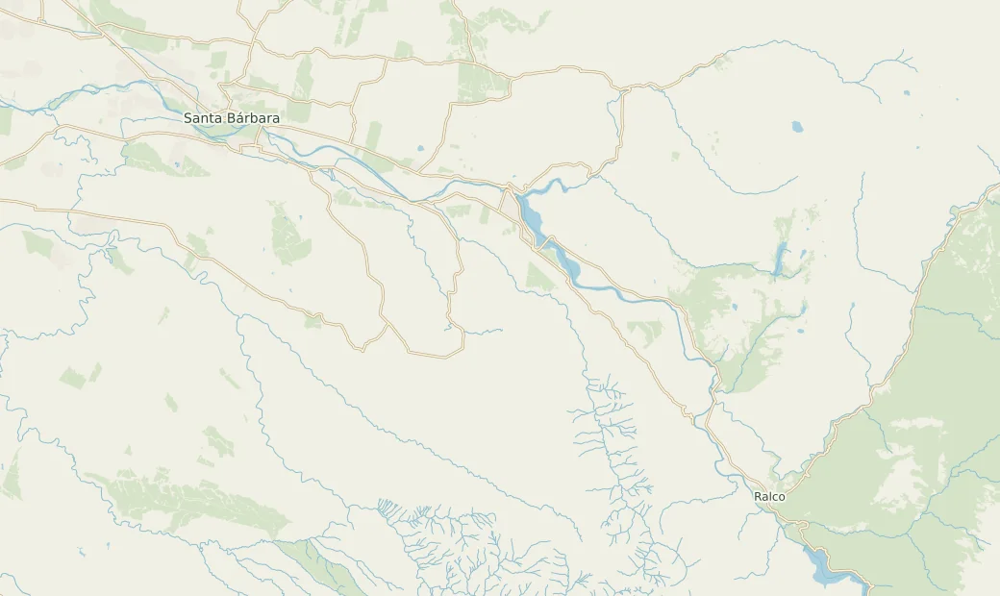

Plan de desarrollo
Roadmap de Quíbar
Mejoras de la aplicación y pruebas que pueden revelar correcciones antes del piloto.
Explorar pendientes
Pendientes de la aplicación
Recuperar el catálogo si una consulta se queda colgadaCambio de código
La carga periódica de lugares bloquea nuevos intentos mientras una petición sigue en curso. Añadir un plazo por petición y reintentar sin recargar la página.
Cierre. Una petición que no responde vence, aparece un aviso y el catálogo vuelve al recuperarse la API. Una ficha suspendida desaparece al refrescar.
Carga del catálogo en React · PT06, K04
Ajustar el plazo de espera del chatCambio de código
El navegador espera hasta 12 s antes de avisar si la petición queda sin respuesta. Ajustar el presupuesto de extremo a extremo para dar tiempo al modo básico y mostrar un aviso oportuno si falla toda la petición.
Cierre. Con el modelo lento o detenido, la interfaz entrega respuesta útil o aviso dentro del objetivo p95 ≤ 10 s. El catálogo sigue disponible.
Chat en React · Integración y modo básico · PT09, PT11, K03
Mostrar el uso semanal por comercioCambio de código
La app registra aperturas de ficha y QR mostrados. El panel actual agrega por tipo de evento. Añadir la vista semanal por comercio a partir de los eventos anónimos existentes.
Cierre. Se pueden consultar cuatro semanas de aperturas y QR mostrados por comercio. La métrica de QR mide cuántas veces se mostró el código.
API administrativa · Panel de métricas · K08
Probar catálogo, mapa y QR sin internetPor verificar
Probar la app con sus datos y teselas locales. Recorrer catálogo, búsqueda, ficha, mapa y generación de QR tras reiniciar sin WAN. Simular fallas de Valhalla y Piper y corregir los bloqueos que afecten los flujos esenciales.
Cierre. Pasa el 100 % de los flujos esenciales sin WAN. La generación del QR se verifica por separado de la apertura de su enlace externo.
Aceptación geográfica existente · PT06–PT08, PT10, K04
Medir la búsqueda y evaluar las respuestas de QuíbarPor verificar
Ejecutar 100 búsquedas desde el navegador y un banco de 50 consultas al chat. Registrar latencias, errores y uso del modo básico. Revisar las respuestas contra el catálogo aprobado y corregir los problemas que arroje la prueba.
Cierre. p95 de búsqueda ≤ 2 s, p95 de chat ≤ 10 s, ≥ 95 % de respuestas fundamentadas y cero ubicaciones inventadas.
Pruebas actuales del asistente · PT09, PT11, K02, K03, K06
Recorrer la interfaz con teclado y sin arrastrar el mapaPor verificar
La interfaz ya incluye una lista de lugares y controles del mapa. Probar el recorrido completo de búsqueda, ficha, ruta y QR. Revisar orden y visibilidad del foco, nombres accesibles, contraste y tamaño de los controles. Corregir los fallos encontrados.
Cierre. El recorrido se completa con teclado y dispone de una alternativa al gesto de arrastre donde corresponde. PT14 registra los criterios comprobados.
Controles del mapa · Pruebas del mapa · PT14